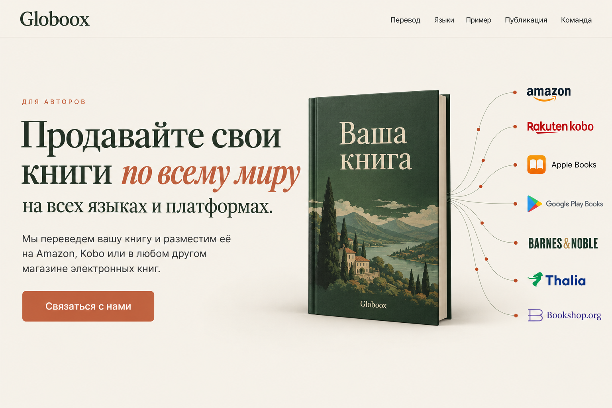

01 — Редакционный баланс

Промпт ImageGen
Use case: ui-mockup. Create ONE exceptionally polished, production-plausible desktop landing-page HERO design for Globoox, a book translation and international publishing service for authors. This is a NEW visual concept, not an edit of the current layout. Output a single flat, full-bleed website screenshot in a landscape 3:2 canvas, approximately 1536 x 1024. Show only the header and complete hero, not subsequent page sections. No browser chrome, device mockup, collage, or multiple alternatives inside the image. Visual system: premium contemporary editorial website, careful Lora-like Cyrillic serif headings and Inter-like sans-serif body, generous purposeful negative space. Palette is parchment #F4F0E8, forest #2C3B2D, terracotta #C05A3A, restrained sage/mist. Materials and shadows should be subtle. Realistic implementable web layout, not a poster with missing UI. Header: "Globoox" wordmark at the FAR LEFT. ALL navigation links grouped at the FAR RIGHT: "Перевод", "Языки", "Пример", "Публикация", "Команда". No app-opening button. No language selector. Header may adapt to the concept but preserve this alignment. Exact hero copy, all Russian text rendered accurately: Small audience label "Для авторов". Primary large heading "Продавайте свои книги по всему миру" with "по всему миру" allowed in italic terracotta. Secondary line, distinctly smaller than primary heading: "на всех языках и платформах." Body paragraph: "Мы переведем вашу книгу и разместим её на Amazon, Kobo или в любом другом магазине электронных книг." One terracotta CTA button: "Связаться с нами". Illustration content: exactly ONE book representing the user's own book, titled "Ваша книга" in two closely spaced lines. Optional small Globoox on cover; NEVER an isolated G monogram. Exactly seven recognizable marketplace identities: Amazon, Rakuten Kobo, Apple Books, Google Play Books, Barnes & Noble, Thalia, Bookshop.org. Every marketplace must be to the RIGHT of the book, never arranged around it. Thin refined connecting threads run from the book to all seven stores. Small round terracotta dots on the threads suggest outward motion. No thick streaks, arrows, moving-dash sausages, animation controls, or orbit diagram. Brand marks may be clean official-style wordmarks/icons. Preserve all stated content; invent no other slogans, features, trust badges, statistics, partner claims, testimonials, footer, or explanatory annotations. In particular never add "КНИГИ БЕЗ ГРАНИЦ" or "Открыть приложение". Keep all text clear of the book, logos and threads unless the concept explicitly uses a book page as the text surface. Make the layout coherent and beautiful at first glance. Composition 01 — BALANCED EDITORIAL SPREAD. Two equal visual columns. Left: sharply structured left-aligned heading in 2–3 lines, smaller secondary line, body and CTA with measured spacing. Right: a large, beautiful upright forest-green book, its top aligned with the main heading; seven marketplace marks form a compact vertical typographic column at the far right. Remove white logo cards entirely: the logos sit directly on parchment with generous clear space. Thin threads elegantly bridge the gap. Book and typography have equal optical weight; no miniature book lost beside giant type. Restrained hairline below the header, ample outer margins, quiet literary confidence.